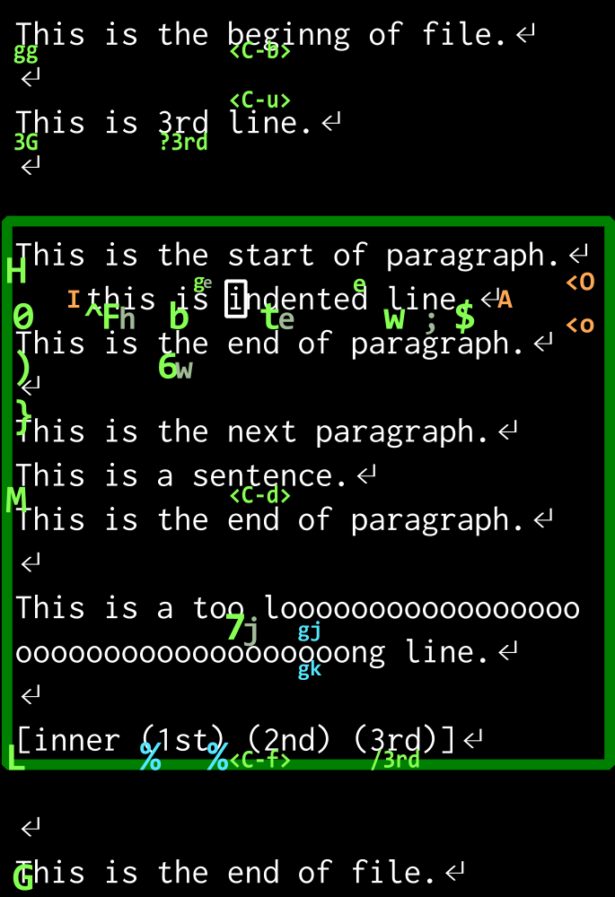

Vim 初心者のための Vim 講座
KMC1回生 wass80
2015/11/6
自己紹介
- 工学部情報学科 1回生
- Js と Ruby が母言語に近い
- Haskell が好き
- Vim 2年目程度
この講座の対象
- Vim を使ってみたい人
- Vim をメモ帳レベルにしか使っていない人
この講座の対象外の人
- vimrc の設定したい
- 良さのあるプラグインを教えてほしい
- 別のエディタをバリバリ使っている
. . .
宗教戦争をしに来たわけではない
目標
- 移動速度を上げる
- オペレータを活用する
- テキストオブジェクトを使えるようになる
- 繰り返しがサクッとできるようになる
→ あなた, まだキーボードを連打していませんか?
このスライドの半分以上は移動するコマンドの紹介です
でも言いたいことは後半
先に
いろいろ言いますが, (僕は)覚えられないです
お手元に Vim を用意しておくのが一番良さそうです
Vim のインストール
お手元に *nix の端末があるなら, たいてい入っている
Windows では Kaoriya 版 Vim がいろいろ入っていて使いやすい
http://www.kaoriya.net/software/vim/
gvim : gui 版 vim
Vim の モード
Vim にはモードが有る
- Normal モード : 起動時のモード
- Insert モード [i] : テキストを入力するモード
- Visual モード [v] : テキストを選択するモード
- Command Line モード [:] : Exコマンドを打つモード
Normal モードから[]のキーを押すことで, Normal以外のモードに推移
Esc を押すことで Normal モードに戻る
基本コマンド
iInsert モードにvVisual モードに- 上のモードで
<Esc>Normal モードに
- 上のモードで
u元に戻す [Undo]:w<CR>書き込み [write]:q<CR>閉じる [quit]
. . .
<CR>は Enterキー [Carriage Return]<C-x>は CTRL キーと x を同時押しの意味<M-x>META(ALT)キーも存在する
移動コマンド
hN文字右にj論理行でN行下にk論理行でN行上にlN文字左に
Nって?
Vim の大体のコマンドは前に数字をつけることが出来る
123j123行下に(いけるところまで)
指定しない場合大抵 N=1
基本的にN回繰り返すことと同等
Vimの移動方法は多い

もっと大きく動く
$^(0) 行末に 空白を除く行頭に (実の行頭に)Ggg最後の行に 最初の行(N行目)に()次文に, 前文に{}次段落に, 前段落に<C-d><C-u>半画面に下に 上に [Down,Up]<C-f><C-b>一画面に下に 上に [Foward,Back]H(M) (L) 画面上部に (中央に) (下部に) [High,Middle,Low]
マウスより早い移動
wb(WB) 1単語右に 左に (WORD単語で) [Word,Back]e(ge) 単語の終わりに (前の単語の終わりに) [End]%対応するカッコに移動する (次の閉じカッコに移動)
WORD は空白区切りの文字列
単語は hoge-piyo の - とかで区切られる
fxtx(FxTx) 次のxに 次のxの手前に (前の) [Find,To]
f と t は ; で繰り返せる
画面外にも移動
/hoge(?hoge) hogeを下に検索する (上に)n(N) 次の検索文字列へ (前の) [Next]gd(gD) 関数内でカーソル下の単語の定義元に (ファイル内)[m(]m) 次のメソッドに (前)[/(]/) 次のコメントに (前)g;前変更箇所に移動, もっと前にも戻れる → :changes<C-o>(<C-i>) 大きな移動の前に戻る (進む) → :jumps
入力と同時に
移動後に Insert モードになる
| 移動のみ | Insertモードに |
|---|---|
| なし | i |
l 一文字右 |
a [Append] |
^ 先頭 |
I |
$ 終わり |
A |
g; 前変更 |
gi |
10i=<Esc> ========== を入力してくれる
o (O) 新しい次の行(前の行)を作り Insertモードに
オペレータコマンド
テキストを操作する
d(dd) 削除 (一行削除) [Delete]y(Y) ヤンク (一行ヤンク) ヤンクはコピーと同じ意味 [Yank]c(cc) 変更 (一行変更) [Change]gu(gU) 小文字化 (大文字化)>(<) インデント (逆インデント)
変更は削除してから Insert モードに入る
削除, ヤンクしたものは p で貼り付けられる [Paste]
Visual モードでテキストを選択して使うことが出来る
範囲選択後にオペレータ
v5wd5単語選択して削除
移動と組み合わせる
オペレータは移動を続けることでも働く
dw単語末まで削除 [Delete Word]c{段落末まで置換
v5wd より d5w が楽
これが大量の移動コマンドがある理由!
“delete 5 words” と感じ取れれば良い
5dw と d5w は同じ
“5times delete a word” と “delete 5 words” の違い程度
行指向
上下に動くものは行全てに適用される
dj下2行を削除dvj行指向でなくすd<C-v>jブロック指向
Visualモードに入るコマンドと対応している
変更は繰り返せる
直前の変更を . で繰り返すことが出来る
dw....5単語削除ihoge<CR><Esc>..hoge を 3回挿入
テキストオブジェクト
移動の代わりに使える, 範囲を表すモノ
(hoge) にたいして
a(は (hoge) [Around]i(は hoge [Inner]
例えば ci[ は [] 内を変更 [Change Inner []]
| オブジェクト | 意味 | 例 |
|---|---|---|
w (W) |
単語 (WORD) | hoge (HO=GE) |
s (p ) |
文 (段落) | hoge. |
[ ( { < |
カッコ | (hoge) |
t |
htmlタグ | <p>hoge<p> |
" ' \` |
クオート類 | “hoge” |
das 一文削除 [Delete A Sentence]
aは周りの空白ごと削除する
textobjプラグイン
- (hoge + piyo, piyo) → (piyo, hoge + piyo)
- textobj-argument と operator-exchange
- apple orange suica → apple apple apple
- operator-replace
- /* comment */ → comment
- textobj-comment と operator-comment
- “word” → ‘word’
- vim-surround
- textobj-entire, line, indent, function も便利
覚えられないよ!
便利なコマンドは使うようになるので,
何度か実践してみよう
vimtutor は良く出来ているし :help を読もう
矢印キーを使わないで, 移動を活用してみる
まとめ
- Normalモードにある大量の移動コマンドを覚えよう
- オペレータと組み合わせると最強になれる
- テキストオブジェクトは便利
その次へ
まだまだ便利なコマンドはたくさんある
- Exモードのコマンド類(:subsutitute , :! , :global , :help)
- バッファ, ウインドウ, タブの関係
- レジスタ, マーク, 折りたたみ, マクロ
- Vimgrep, quickfix
- Insertモードでのコマンド
- 基本的な vimrc 設定
便利なプラグインもたくさんある
- NeoBundle プラグイン管理
- Unite 一覧, 検索
- NeoComplete 補完
- Quickrun
- textobj類
- airline ステータスラインをリッチに
- fugitive git
- Emmet html編集
- etc…
答えられる限りの質問に答える
neovim 1.0出ました